"This is the moment I accept the most challenging times will always be behind me and in front of me."
"The most important thing is to try and inspire people so that they can be great in whatever they want to do.""
Kobe Bryant
1978 - 2020
About
Kobe Bean Bryant was an American professional
basketball player. A shooting guard, Bryant entered the National
Basketball Association (NBA) directly from high school, and played
his entire 20-season professional career in the league with the Los
Angeles Lakers. Bryant won five NBA championships, was an 18-time
All-Star, 15-time member of the All-NBA Team, 12-time member of the
All-Defensive Team, was named the 2008 NBA Most Valuable Player
(MVP), and was a two-time NBA Finals MVP winner. Widely regarded as
one of the greatest players of all time, he led the NBA in scoring
during two seasons, ranks fourth on the league's all-time regular
season scoring, and ranks fourth on the all-time postseason scoring
list. Bryant was the son of former NBA player Joe Bryant. He
attended Lower Merion High School in Pennsylvania, where he was
recognized as the top high-school basketball player in the country.
Upon graduation, he declared for the 1996 NBA draft and was selected
by the Charlotte Hornets with the 13th overall pick; the Hornets
then traded him to the Lakers. As a rookie, Bryant earned himself a
reputation as a high-flyer and a fan favorite by winning the 1997
Citing his physical Slam Dunk Contest, and he was named an All-Star
by his second season.
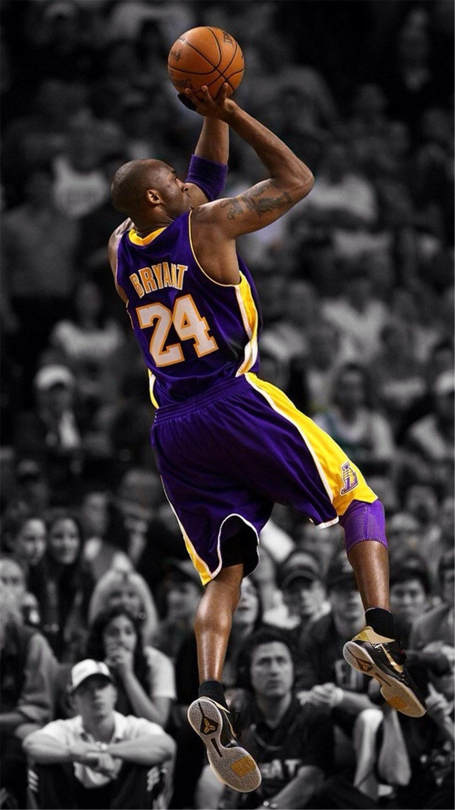
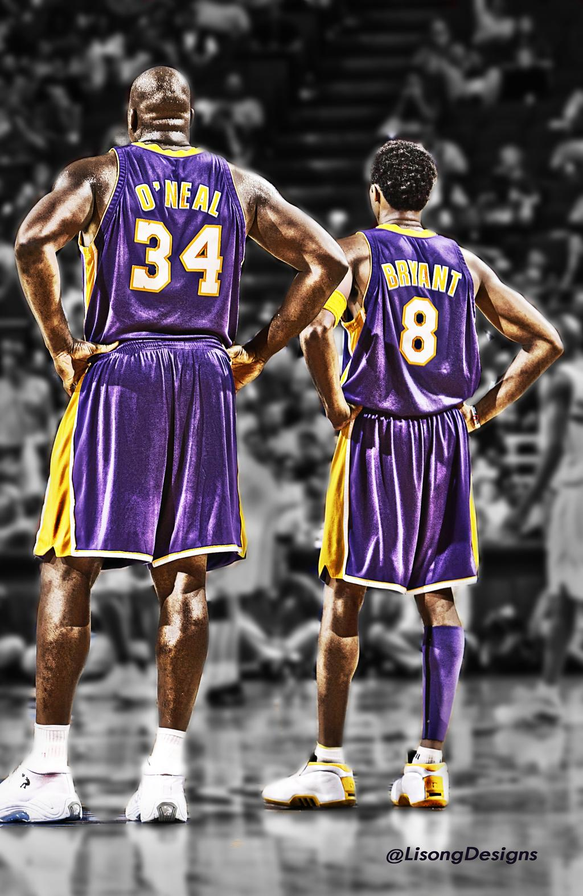
Despite a feud with teammate Shaquille O'Neal, the pair led the
Lakers to three consecutive NBA championships from 2000 to 2002. In
2003, Bryant was accused of sexual assault, but the charges were
dropped after the plaintiff refused to testify and a civil suit was
settled out of court. Bryant issued a public apology, but the
allegations were considered to have harmed his public profile and
led to the loss of several sponsorships. After the Lakers lost the
2004 NBA Finals, O'Neal was traded and Bryant became the cornerstone
of the Lakers. He led the NBA in scoring during the 2005–06 and
2006–07 seasons. In 2006, he scored a career-high 81 points; the
second most points scored in a single game in league history, behind
Wilt Chamberlain's 100-point game in 1962. Bryant led the team to
two consecutive championships in 2009 and 2010, and was named NBA
Finals MVP on both occasions. He continued to be among the top
players in the league through 2013, when he suffered a torn Achilles
tendon at age 34. Although he recovered from that injury, he
suffered season-ending injuries to his knee and shoulder,
respectively, in the following two seasons.
Bryant retired after the 2015–16 season. At 34 years and 104 days of
age, Bryant became the youngest player in league history to reach
30,000 career points. He became the all-time leading scorer in
Lakers franchise history on February 1, 2010, surpassing Jerry West.
Bryant was also the first guard in NBA history to play at least 20
seasons. His 18 All-Star designations are the second most all time,
while it is the record for most consecutive appearances as a
starter. Bryant's four All-Star MVP Awards are tied with Bob Pettit
for the most in NBA history. At the 2008 and 2012 Summer Olympics,
he won two gold medals as a member of the U.S. national team. In
2018, he won the Academy Award for Best Animated Short Film for his
film, Dear Basketball (2017). Bryant died on January 26, 2020, in a
helicopter crash in Calabasas, California. Eight others, including
his 13-year-old daughter Gianna Bryant, and college baseball coach
John Altobelli, were also killed.
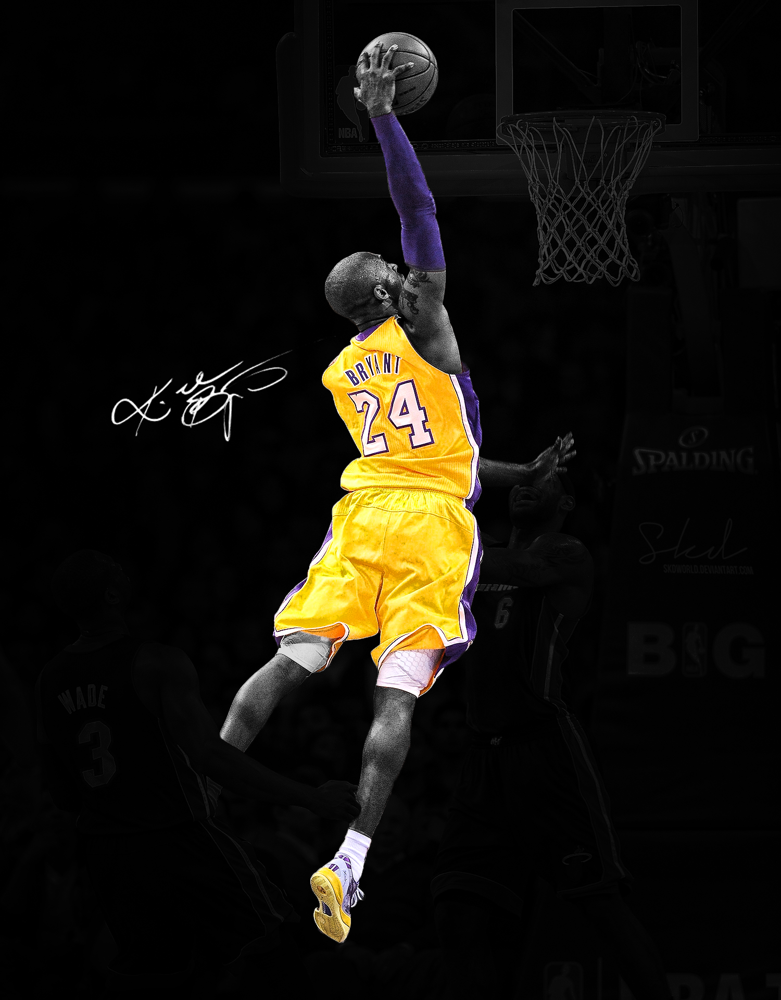
Photos
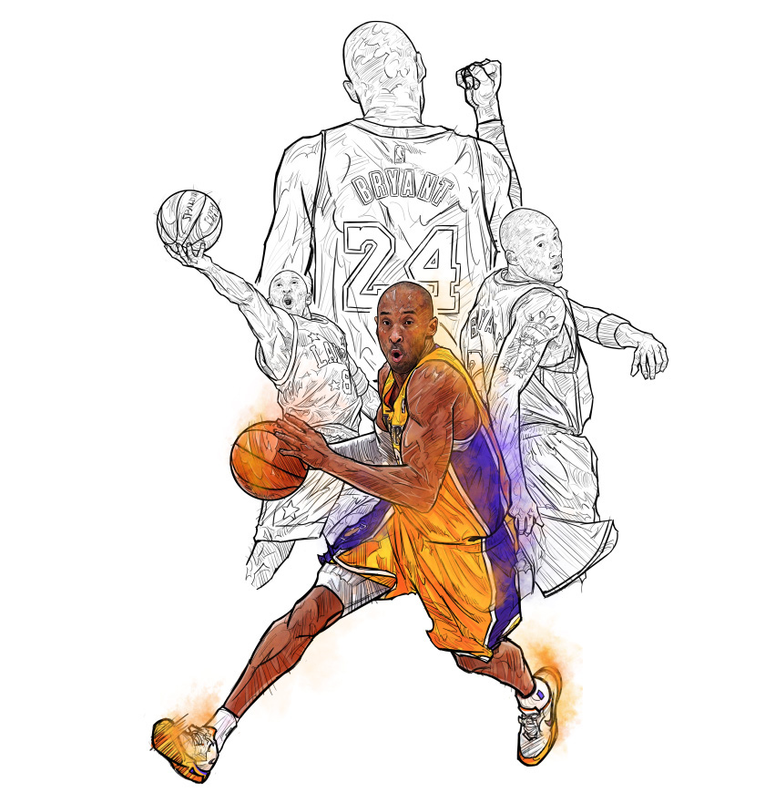
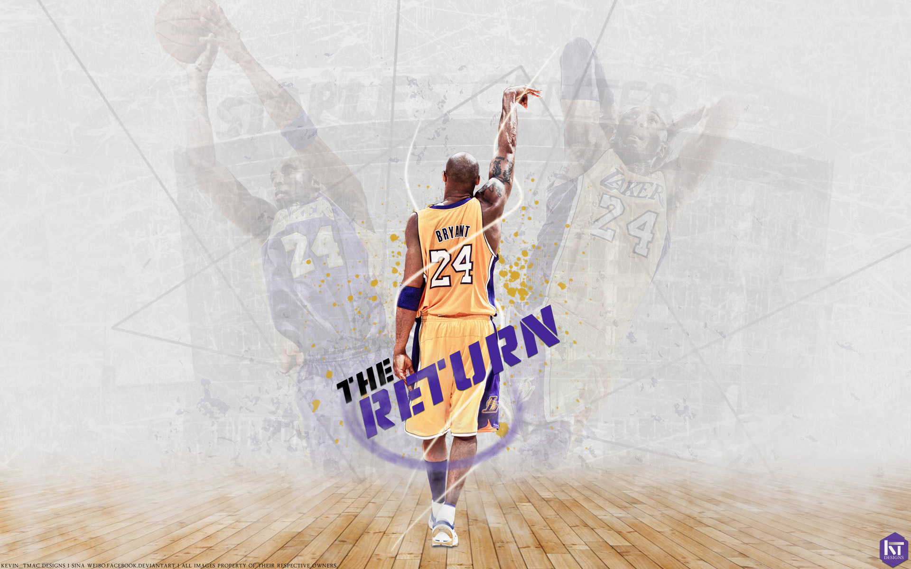
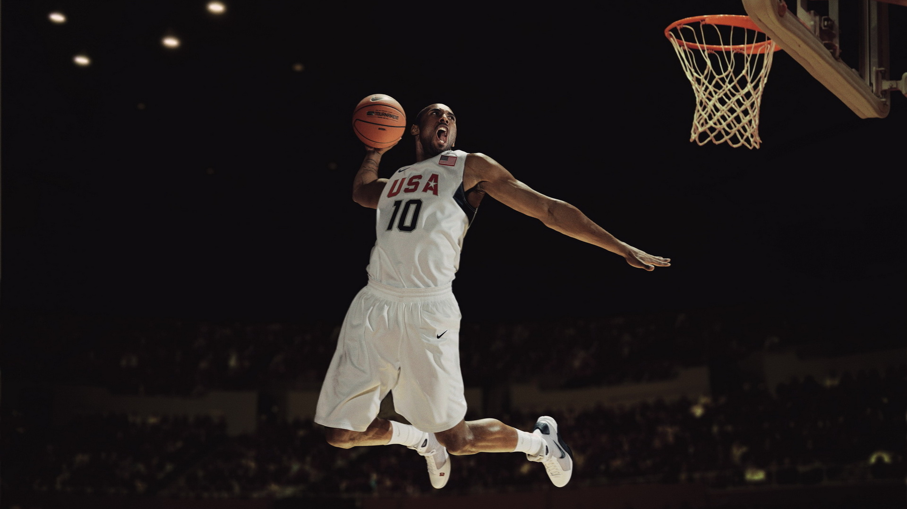
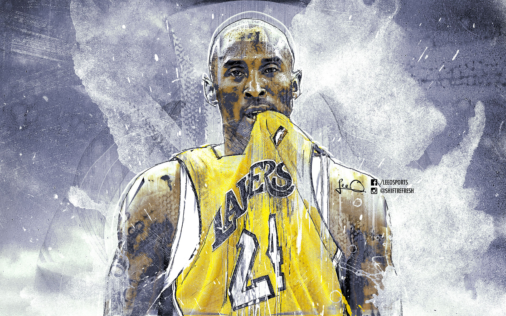
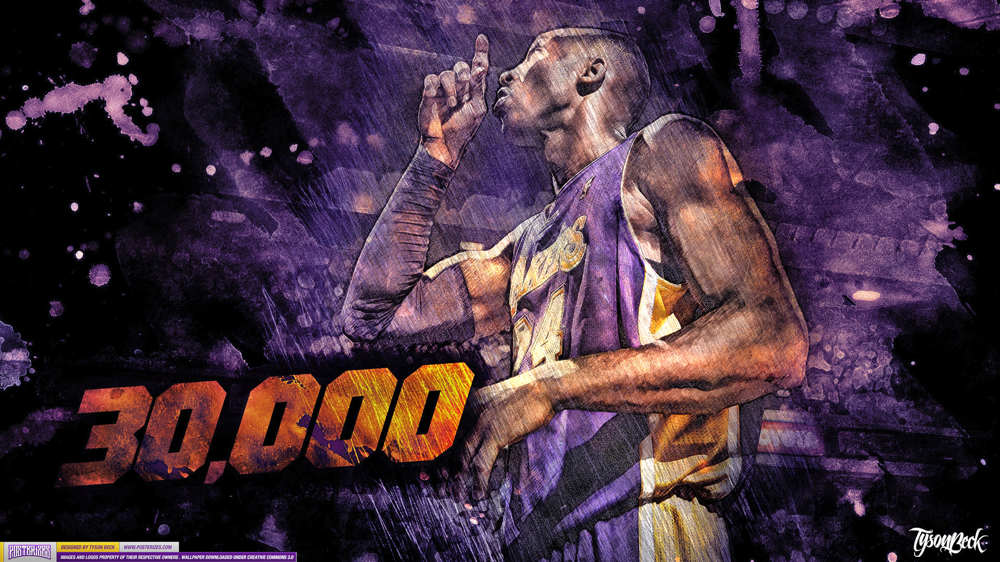
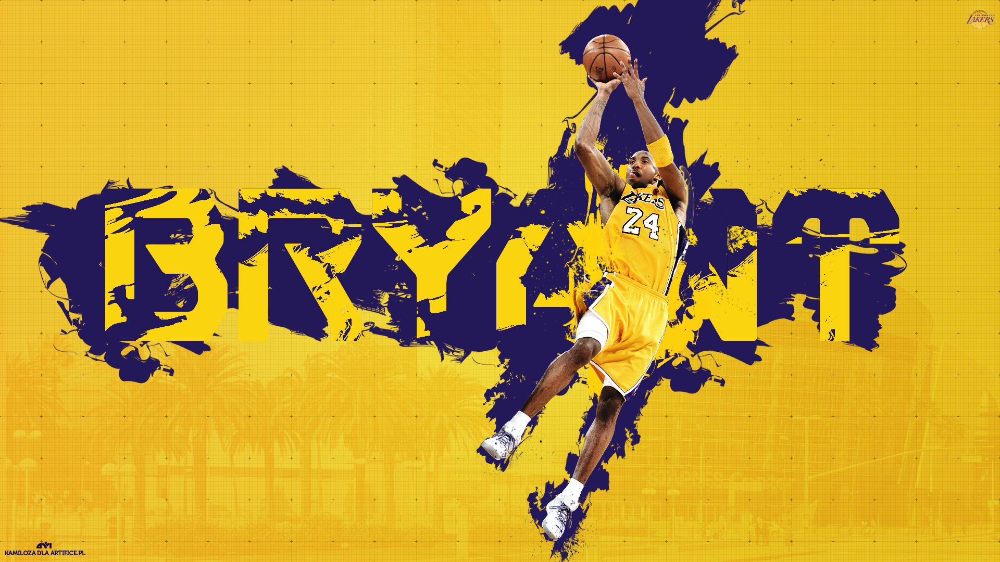
 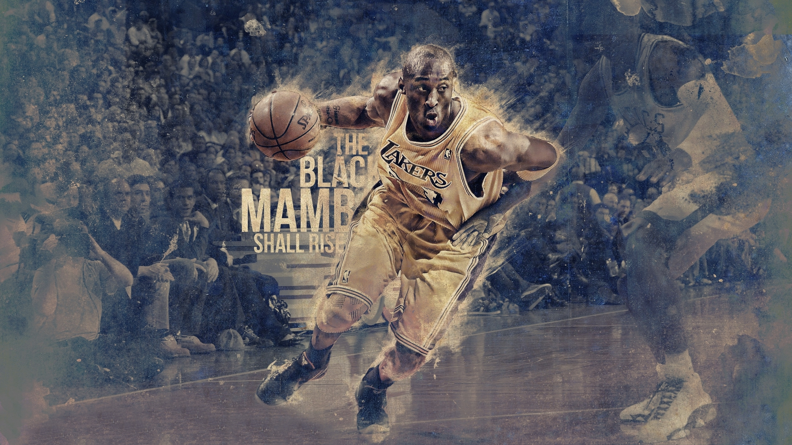
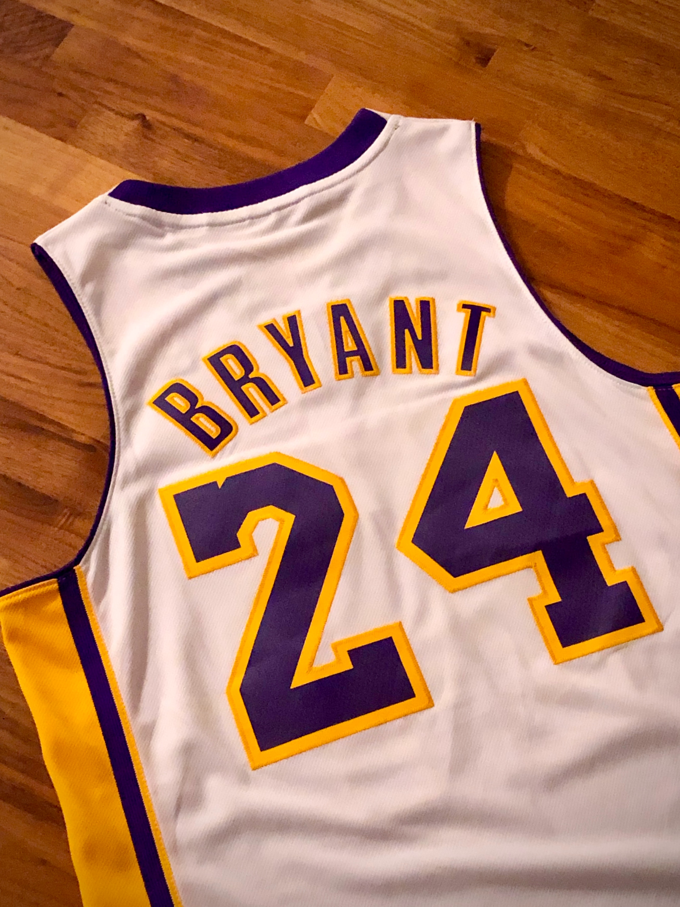
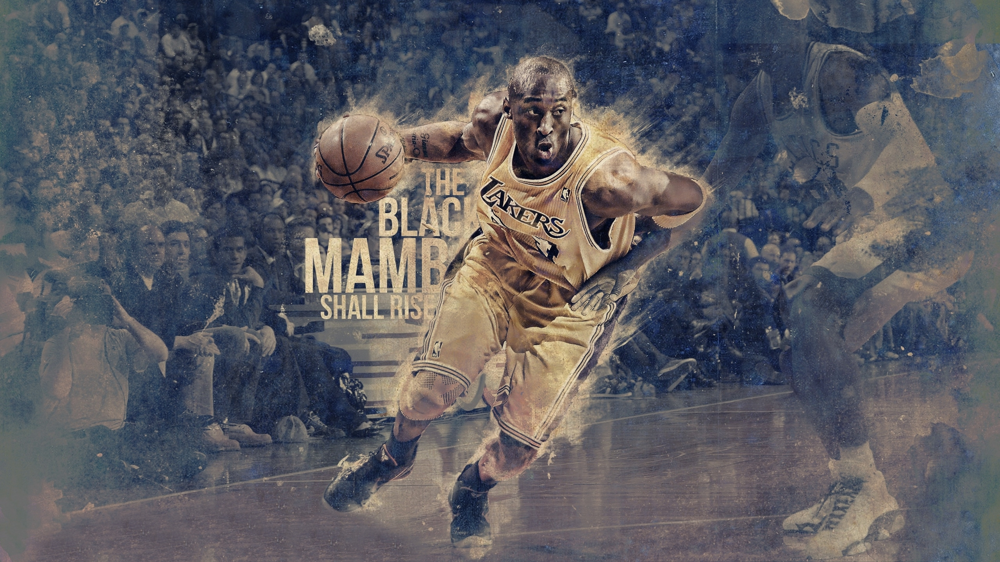
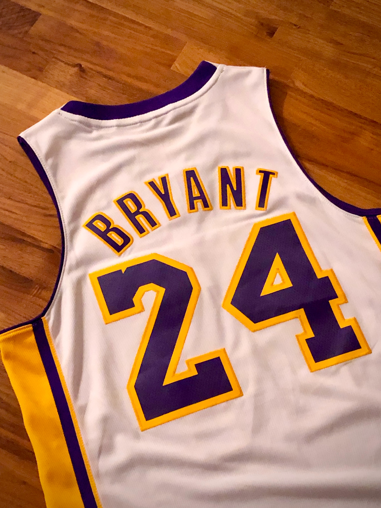

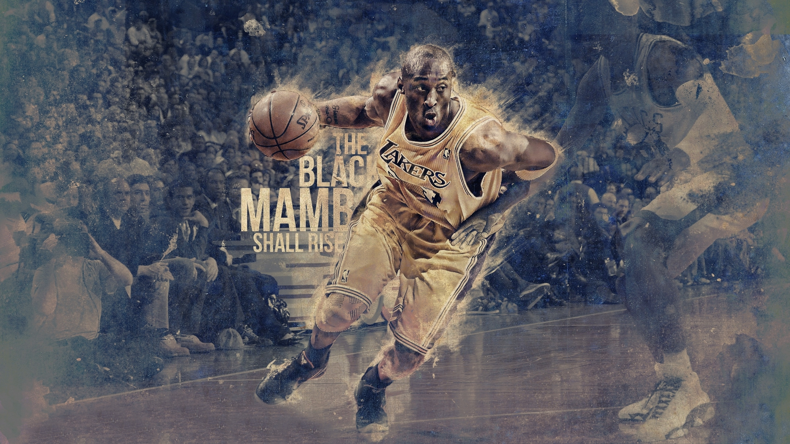
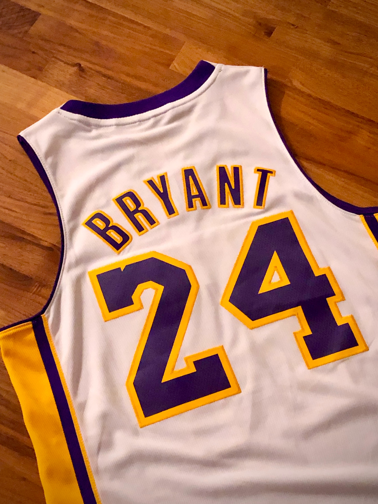